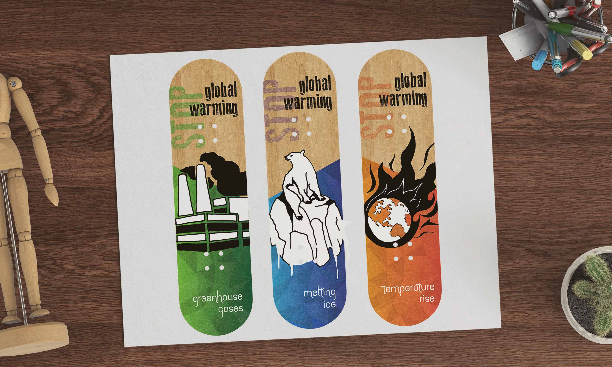
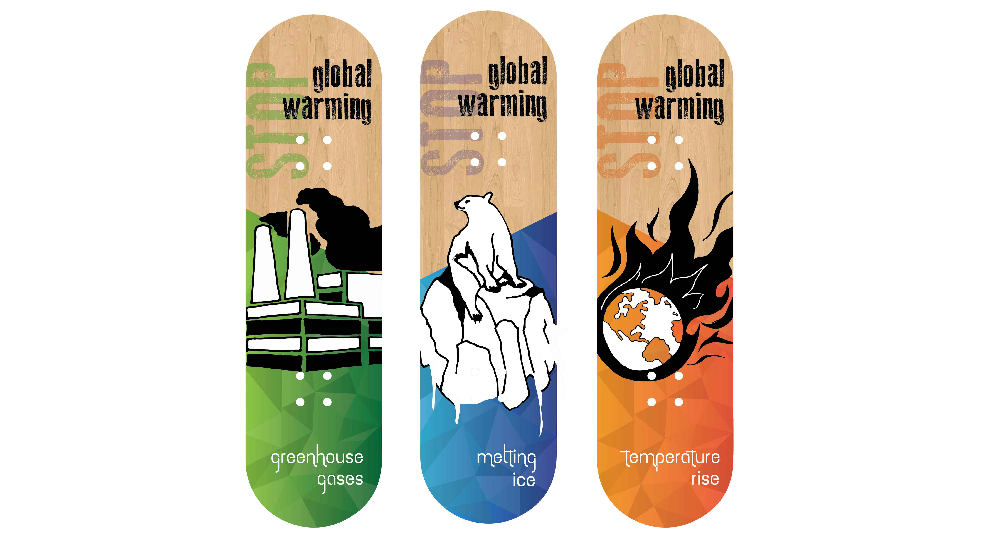

Skateboard Design
Goal: To create s visually interesting set of graphics in a series for skateboards. The design process required extensive use of Adobe Illustrator Live Image Trace feature which would give the graphics a loose, hand drawn quality. All the three boards had to follow the same conceptual theme based on any social awareness issue that had a sense of gravity and importance in society. The aim was to show variation in the three boards, but maintain design uniformity.
Skateboard mock-up

Hand-drawn sketches for skateboards
skateboard series
